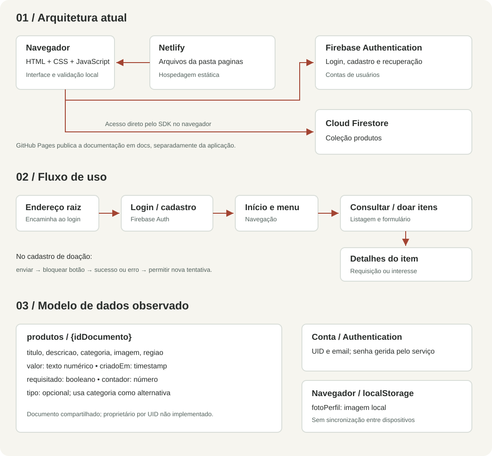

Ajuste final solicitado: a Home agora reutiliza o padrão das páginas institucionais (banner com foto e sobreposição, Poppins, botões coral, fundo branco e rodapé compartilhado). A composição foi reduzida a duas seções, mantendo as opções de contribuição e os cartões com novas imagens. As etapas expansíveis e os elementos decorativos da versão anterior foram removidos.
Entrega 7 · Testes e refinamento
Solidariedade que
começa com uma boa experiência.
Documentação do Projeto Caridade: uma aplicação acadêmica para aproximar pessoas que desejam doar de quem procura apoio.
Ler avaliação completaComo executar o projeto →Esta revisão está pronta localmente. A publicação no Netlify e no GitHub Pages será feita depois. Testes de gravação usam Firebase simulado; não representam validação do banco de produção.
O projeto
O objetivo é organizar a divulgação de ações solidárias e o cadastro de itens disponíveis para doação. O público inclui doadores, pessoas que procuram itens e interessados em conhecer as iniciativas do projeto.
A aplicação utiliza HTML, CSS e JavaScript. Firebase Authentication gerencia contas e Cloud Firestore armazena produtos. A hospedagem existente utiliza Netlify; esta página foi preparada para o GitHub Pages.
Cinco melhorias prioritárias
| Melhoria | Problema encontrado | Resultado |
|---|---|---|
| 1. Entrada principal | Raiz sem index.html | Encaminhamento automático para o login |
| 2. Login no celular | Viewport ausente e imagem ocupando a tela | Formulário compacto e legível |
| 3. Formulários | Validação tardia e campos pouco identificados | Validação durante o preenchimento e envio pelo teclado |
| 4. Menu | Acionador sem semântica e scripts concorrentes | Botão acessível, estados e fechamento por Escape |
| 5. Doações | Falhas sem retorno e possibilidade de duplicidade | Andamento, sucesso/erro e nova tentativa sem perder dados |
Arquitetura, fluxo e dados
Os diagramas representam o funcionamento observado, sem atribuir ao sistema recursos ainda não implementados.

Abrir diagramas em tamanho completo
{kind=link}
Testes e evidências
Foram executados testes de validação, cadastro, sucesso e falha de doação com serviço simulado, sintaxe e referências locais. A inspeção por tarefas incluiu login, navegação por teclado e menu móvel.
Ver saída integral dos testes · Baixar relatório em Markdown
Não foi realizado estudo com participantes externos. Autenticação e gravação reais no Firebase continuam sujeitas à configuração e às regras do projeto.
Estado da entrega
- Testes automatizados e inspeção técnica: executados no escopo documentado.
- Refinamento: cinco melhorias implementadas.
- Hospedagem: site existente no Netlify; atualização adiada.
- GitHub Pages: página e diagramas preparados; publicação adiada.
- Documentação: relatório, manual e evidências disponíveis.
- Vídeo de até 10 minutos: responsabilidade do autor.
Limitações conhecidas
Há formulários institucionais sem envio integrado, perfil sem isolamento de itens por usuário, requisições sem transação e pontos de renderização de dados que exigem revisão. As regras do banco não foram verificadas. O relatório explica os limites para que a demonstração reflita o estado real do sistema.
Endereços do projeto
Repositório no GitHub · Hospedagem existente no Netlify
A presença desses links não significa que a revisão local já foi publicada.
Atualização visual da Home
A Home foi reformulada com quatro opções interativas de contribuição, etapas expansíveis e seis novas imagens ilustrativas. Cinco testes adicionais foram aprovados.
Ver alterações, arquivos e prompts das imagens · Ver os testes da Home